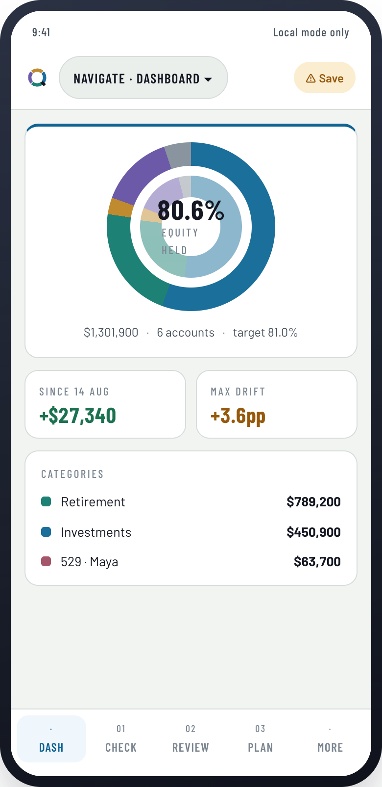

Your accounts
6
separate views of individual accounts
Every institution shows you a reported allocation—its own slice, in isolation. Nobody shows you the whole. Quartermaster blends every account you hold into one real allocation, then helps you check it against your target and plan with a complete view.


Each institution shows one part of the picture. Quartermaster brings the accounts together into your real allocation, compares it to your target, and estimates how the location of each holding affects annual taxes.
Bonds in a taxable account and international in a Roth are both defensible in isolation. Together they can cost you more than the expense ratios you worked hard to optimize. Quartermaster prices the difference rather than quoting the rule of thumb.
Enter updated balances from all accounts. CSV upload or manual entry.
Compare the latest check-in with the previous one and with your allocation target.
Record potential changes, or intentionally choose no action this quarter.
Save a clear record of the review, assumptions, and decisions.
Your portfolio has a job to do. Explore how it could support the retirement you want and the education you hope to fund—before those milestones arrive.
Adjust retirement age, annual spending, and contributions. Run simulated market paths to see a range of possible balances and how often your savings cover your spending under the assumptions you choose.
Explore retirement with demo dataSet college costs, starting age, years of study, and yearly contributions for each child. Explore how a 529’s age-based investment mix could grow, then fund education over time.
Explore college with demo dataSimulations illustrate possibilities, not forecasts or guarantees; tax and withdrawal rules are simplified. Both tools are available in Outlook in the free introductory release.
Quartermaster has no affiliate commissions, financial products, or portfolio-data marketplace. The introductory release keeps your portfolio in a file you control.
Portfolio calculations run in your browser. This version has no portfolio-upload service, account sign-in, or automatic market-data connection.
Save your portfolio file when you finish a session. Next time, open that file to pick up where you left off. Keep a backup somewhere you trust; we cannot recover a file you lose.
The standalone app works offline without analytics. The hosted website uses privacy-conscious analytics to measure page visits and performance without including your portfolio contents.
Keep a backup of your local portfolio file. Future cloud saving would be optional and would upload data only if you choose it; explore upcoming paid capabilities.
Quartermaster is in its introductory release. Your feedback will help shape what we improve and build next.
No account registration or bank connection required. Here’s how to get started: